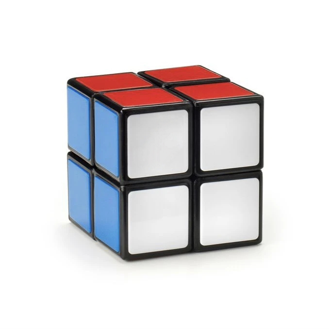

About
Ditulis oleh Raffa Azhar. pada 28 Oktober 2025
Kubus Rubik adalah sebuah permainan teka-teki mekanik yang ditemukan pada tahun 1974 oleh pemahat dan profesor arsitektur Hungaria, Ernő Rubik. Permainan ini terbuat dari plastik dan terdiri atas 26 bagian kecil yang dapat berputar pada poros yang terlihat. Kubus diterbitkan di kawasan Eropa pada Mei 1980. Kubus Rubik tercatat sebagai mainan paling banyak terjual di dunia, dengan sekitar 300 juta unit—belum termasuk imitasi.
Penemuan & Pengembangan
Pada bulan Maret 1970, Larry Nichols menciptakan sebuah twisty-puzzle berdimensi 2 × 2 × 2 yang dapat diputar dan kemudian mengajukan paten di Kanada. Pada 9 April 1970, Frank Fox memperoleh paten untuk “Spherical 3 × 3 × 3” di Inggris pada 16 Januari 1974. Pada pertengahan 1970-an, Ernő Rubik bekerja di Departemen Desain Interior di Akademi Seni Terapan dan Kerajinan di Budapest. Ia menciptakan kubus ini sebagai alat pengajaran untuk membantu para murid menikmati pemahaman objek tiga-dimensi. Tujuan sebenarnya ialah meneliti masalah struktural bagian-bagian yang mandiri tanpa mekanisme yang menyebabkan seluruh bagian berantakan. Rubik tidak menyangka bahwa perangkat ini akan menjadi teka-teki sampai ia mengacak kubusnya untuk pertama kali dan kemudian berusaha mengembalikannya ke posisi semula. Ia memperoleh paten untuk “Kubus Ajaibnya” di Hungaria pada tahun 1975. Produksi pertama dilakukan sekitar tahun 1977 dan dirilis ke toko mainan di Budapest. Desainnya menggunakan potongan plastik yang mencegah bagian-bagian terpisah, berbeda dengan desain magnet dari Nichols. Pada bulan September 1979, dibuat perjanjian dengan “Ideal Toys” untuk membawa Kubus Ajaib ke luar negeri, yang dipamerkan di London, Paris, Nuremberg, dan New York.
Pertandangan & Rekor
Speedcubing/Speedsolving
Speedcubing adalah aktivitas menyelesaikan Kubus Rubik secepat mungkin. Kejuaraan Dunia pertama diadakan di Munich pada 13 Maret 1981, di mana semua kubus dilumasi dengan petroleum jelly. Pemenang resmi adalah Jury Froeschl dengan catatan waktu 38 detik. Kejuaraan Internasional pertama diadakan di Budapest, Hungaria, pada 5 Juni 1982, dimenangkan oleh Minh Thai dari Los Angeles, dengan catatan 22,95 detik.
Blindfolded Solving
Blindfolded solving (disingkat BLD) adalah cara menyelesaikan Kubus Rubik dengan mata tertutup. Prosesnya: peserta memeriksa dan mememorisasi posisi warna dengan mata terbuka, kemudian menutup mata sebelum memulai penyelesaian. Waktu mulai dihitung sejak pemeriksaan selesai. Rekor dunia resmi untuk 3×3×3 BLD tunggal tercatat 12 detik oleh Tommy Cherry dari AS pada kompetisi Triton Tricubealon 2024 di San Diego, California.
Multiple Blindfolded Solving
Multiple blindfolded solving atau BLD masal adalah cabang dimana peserta memecahkan beberapa kubus sekaligus dalam kondisi mata tertutup tanpa jeda. Cabang ini menuntut daya ingat luar biasa, teknik tingkat tinggi, konsentrasi, dan kecepatan. Rekor dunia saat ini dipegang oleh Graham Siggins dari AS: berhasil menyelesaikan 62 dari 65 Kubus Rubik dalam 57:47 menit pada pertandingan Blind Is Back LA (2022), Los Angeles
One-Handed Solving
Cabang ini mewajibkan peserta menyelesaikan Kubus Rubik hanya menggunakan satu tangan—baik kanan atau kiri.
Solving with feet
Dalam cabang ini, peserta menyelesaikan Kubus Rubik menggunakan kaki, mulai dari pemeriksaan hingga penyelesaian. Bentuk ini merupakan salah satu cabang resmi yang diselenggarakan oleh World Cube Association (WCA). Rekor resmi jatuh kepada Daniel Rose-Levine dari AS dengan waktu rata-rata 16,96 detik. Di Indonesia, terdapat rekor nasional dalam beberapa cabang yang tercatat oleh WCA.
Variasi
Terdapat banyak variasi dari Kubus Rubik. Namun secara resmi, ada 11 jenis yang dijadikan kompetisi oleh WCA, yaitu Kubus Rubik ukuran 2×2×2 (Pocket Cube), 3×3×3, 4×4×4, 5×5×5, 6×6×6, dan 7×7×7. Ada juga jenis lainnya Kubus Rubik Skewb, Megaminx, Kotak-1, dan Rubik Jam.


Sumber Artikel : Wikipedia